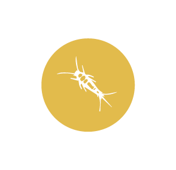

MUĞLA DELTA İLAÇLAMA
Gümüş Böceği
Muğla Delta İlaçlama

Vücut büyüklüğü 7-10 mm’dir. Erginin üst kısmı gümüş renkte pulcuklarla kaplıdır. Yumurtadan yeni çıkmış yavrular beyaz renktedir. Bir dişi 100 kadar yumurta bırakır. Hayat evresi 1 yılda tamamlanır. Erginler 2-3 yıl yaşar. Un fabrikaları ve depoları, kütüphane, ev ve kağıt depolarında sık rastlanan böceklerdendir. Nemli, sıcak ve loş yerleri sever. Şekerli, unlu maddelerle, kağıt ve kağıt ürünleriyle beslenirler. Pamuk, naylon, kitap ciltleri, duvar kağıtları, nişastalı materyallerle beslenirler.
Bizimle iletişime geçin